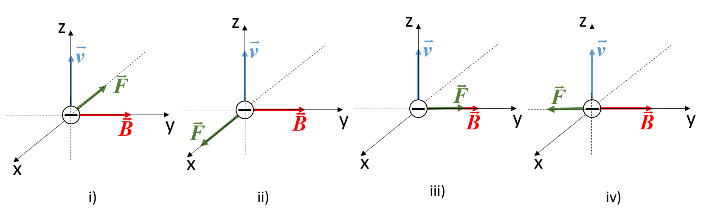
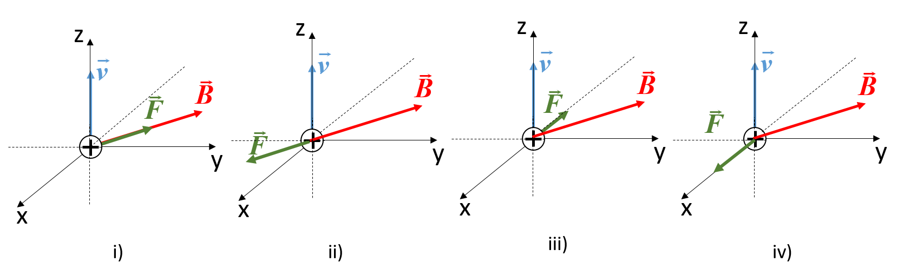
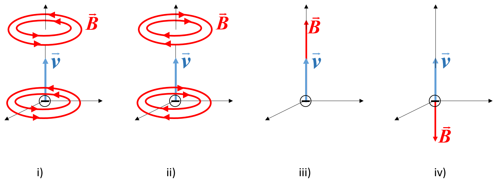
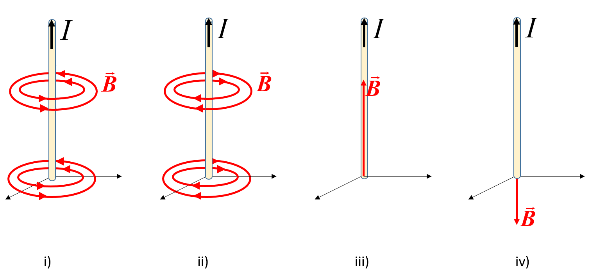

¿Cuál de estas afirmaciones es cierta? El campo magnético ejerce una fuerza sobre todos los cuerpos con carga eléctrica. El campo magnético ejerce una fuerza sobre las cargas en movimiento. El campo magnético ejerce una fuerza sobre las cargas que se desplazan en dirección perpendicular al campo. El campo magnético ejerce una fuerza sobre las cargas que se desplazan en dirección paralela al campo. El campo magnético ejerce una fuerza sobre las cargas que están en reposo.
En las siguientes figuras la carga es negativa, \(\vec{v}\) es la velocidad de la carga, \(\vec{B}\) es el campo magnético y \(\vec{F}\) la fuerza que el campo ejerce sobre la carga. ¿Cuál de todas ellas es la correcta? 
En las siguientes figuras la carga es positiva, \(\vec{v}\) es la velocidad de la carga, \(\vec{B}\) es el campo magnético, situado en el plano YZ, y \(\vec{F}\) la fuerza que el campo ejerce sobre la carga. ¿Cuál de todas ellas es la correcta? 
Una carga de 1 \(\mu\)C se mueve a una velocidad \(\vec{v}=(2\hat{\imath}+1\hat{\jmath})\) m/s en una región en la que hay un campo magnético \(\vec{B}=5\hat{\imath}\) mT. Calcule la fuerza que el campo ejerce sobre la carga \(\vec{F}=10\hat{\imath}+5\hat{\jmath}\) nN. \(\vec{F}=-10\hat{\imath}\) nN. \(\vec{F}=10\hat{\imath}\) nN. \(\vec{F}=-5\hat{k}\) nN.
La fuerza magnética no varía el módulo de la velocidad de la carga, sino sólo la desvía de su trayectoria. ¿Verdadero o falso? Verdadero. Falso.
Una carga en un campo magnético se ve acelerada en la dirección del campo. ¿Verdadero o falso? Verdadero. Falso.
Una carga de 2 nC viaja a una velocidad \(\vec{v}=(5\hat{\jmath}+8\hat{k})\) m/s. En esta región existe un campo magnético \(\vec{B}=(0.2\hat{\imath}+0.2\hat{\jmath})\) T. Calcular la fuerza que actúa sobre ella. \(\vec{F}=\left(-3.2\hat{\imath}+3.2\hat{\jmath}-2\hat{k}\right)\) nN. \(\vec{F}=\left(3.2\hat{\imath}-3.2\hat{\jmath}-2\hat{k}\right)\) nN. \(\vec{F}=2\hat{\imath}\) nN. \(\vec{F}=-5\hat{k}\) nN.
Una carga \(q\) de masa \(m\) se encuentra en reposo en una región en la que coexisten un campo eléctrico \(\vec{E}\) y un campo magnético \(\vec{B}\) paralelos. ¿Qué afirmación es verdadera? Sobre la carga no actúa ninguna fuerza puesto que la acción del campo eléctrico y el campo magnético se anulan entre sí. La carga iniciará su movimiento en la dirección perpendicular al campo magnético y se acelerará en la dirección del campo eléctrico. La carga se acelera en la dirección del campo eléctrico con \(\vec{a}=q\vec{E}/m\). La carga realizará trayectorias circulares.
Una carga \(q\) de masa \(m\) se encuentra en reposo en una región en la que coexisten un campo eléctrico \(\vec{E}\) y un campo magnético \(\vec{B}\) perpendiculares. ¿Qué afirmación es verdadera? Sobre la carga no actúa ninguna fuerza puesto que la acción del campo eléctrico y el campo magnético se anulan entre sí. La carga iniciará su movimiento en la dirección perpendicular al campo magnético y se acelerará en la dirección del campo eléctrico. La carga se acelera en la dirección del campo eléctrico con \(\vec{a}=q\vec{E}/m\). La carga realizará trayectorias circulares en el plano perpendicular al campo magnético de radio cada vez mayor.
Señale la afirmación más exacta: Las cargas generan sólo campos magnéticos. Las cargas generan sólo campos eléctricos. Las cargas generan campos magnéticos y campos eléctricos. Las cargas en movimiento generan campos magnéticos y campos eléctricos.
En la siguiente figura se muestra una carga negativa que se desplaza verticalmente hacia arriba con velocidad \(\vec{v}\) y el campo magnético \(\vec{B}\) que crea. Señale el esquema correcto: 
En la siguiente figura se muestra una corriente rectilínea \(I\) y y el campo magnético \(\vec{B}\) que crea. Señale el esquema correcto: 
Por dos corrientes eléctricas rectilíneas y paralelas circula una corriente en la misma dirección y sentido: Se atraen por efecto del campo magnético generado por la otra. Se repelen por efecto del campo magnético generado por la otra. No hay ningún efecto puesto que el campo magnético es la suma de los campos creados por cada una de ellas.
El flujo magnético a través de una superficie es: El campo creado por las espiras de corriente presentes en la superficie. El movimiento de cargas eléctricas producido por el campo magnético a través de esa superficie. La proyección del campo magnético perpendicular a la superficie y sumado a todos los puntos de la misma.
La ley de Faraday dice: La fuerza electromotriz generada en una espira es igual a la variación de campo magnético. La fuerza electromotriz generada en una espira es igual a la disminución de flujo magnético. La fuerza electromotriz generada en una espira se produce al mover la espira en presencia de un campo magnético.
Indique en qué situación NO se produce una fuerza electromotriz: Solenoide que se desplaza en un campo magnético uniforme. Solenoide que gira en un campo magnético uniforme. Solenoide que gira en un campo magnético no uniforme. Solenoide que se desplaza en un campo magnético no uniforme.
Una espira que sustenta un área \(S=2\) m\(^2\) está situada en un campo magnético perpendicular al área sustentada por la espira. El campo varía con el tiempo según la expresión: \(B=0.2t\) (T), siendo \(t\) el tiempo. Calcule, en valor absoluto, la fuerza electromotriz generada en la espira. 0.4 V. 0.2 V. 2.2 V. 0.2 T.